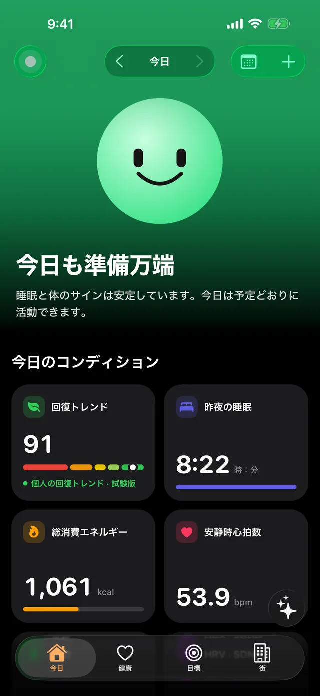
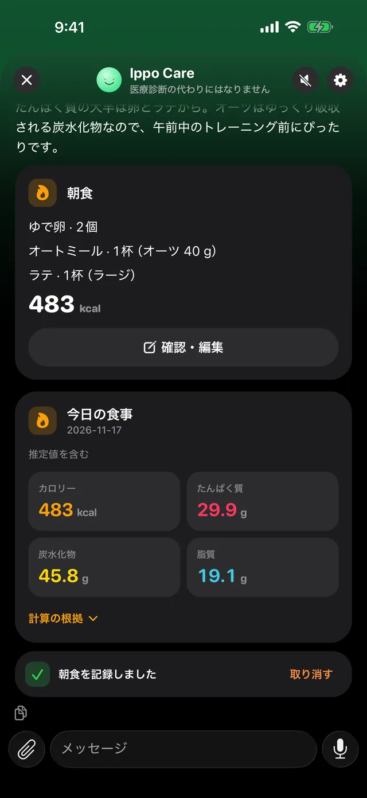
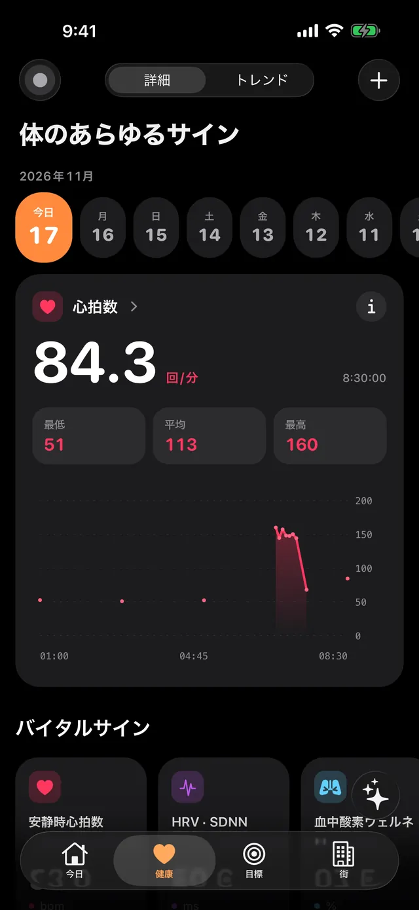

iPhone のためのパーソナル健康パートナー
iPhone のためのパーソナル健康パートナー
毎日の小さな一歩が、目に見える変化に。
Ippo Care は、Apple ヘルスケアのデータ、食事、トレーニングをひとつにまとめ、続けられる目標づくりを助け、あなたの本当の歩みで小さな街を育てます。
- データは iPhone の中に
- アカウント不要
- 広告・トラッキングなし


開発者より
Ippo Care を作った理由
Yusen WangIppo Care 開発者
以前の私は深刻な肥満で、体重のせいで体調もすっかり崩していました。ジムに行くのは恥ずかしく、何から始めればいいのかも分かりませんでした。
そんな私を変えてくれたのが AI でした。AI は決して私を責めず、自分の体を理解する手助けをし、無理なく続けられる計画を一緒に立て、一歩ずつ前へ進ませてくれました。そうして私は減量に成功し、今ではここ何年もなかったほど健康だと感じています。
Ippo Care を作ったのは、かつての私のように何から始めればいいか分からない人にも、同じ静かな支えを届けたかったからです。AI が、私たちに自分をもう少し好きにさせてくれますように。そしてバーチャルな AI が、リアルな私たちを一日ずつ良くしてくれますように。
あなたのデータを大切に扱います
- データは iPhone の中にアカウントも、開発者が運営する健康データベースもありません。記録はあなたのデバイスに保存されます。
- 広告なし、トラッキングなし広告や分析 SDK は含まれず、ヘルスケアのデータを販売することもありません。
- AI はあなたが選ぶアシスタントは任意の機能で、あなたが設定したプロバイダとキーだけを使います。
